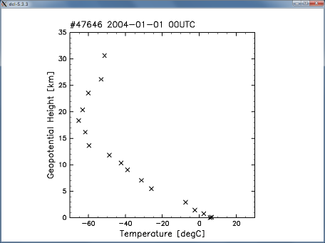

ここでは、まずRubyのスクリプト言語としての基本的な使い方を紹介します。 そのあと数値計算・配列演算に必要なパッケージの紹介、 地球科学のデータを読み書きしたり可視化したりする方法の紹介へと 続きます。最後のほうでは流体数値計算もやっています。
1. Rubyの基本的な使い方
2. NArrayを使って配列演算
3. ファイルの読み書き
4. Ruby-DCLで絵を描く
5. Ruby-NetCDFでデータの読み書き
6. 流体数値計算も
RubyはPerlやシェルスクリプトと同じようなスクリプト言語です。 スクリプトを記述したファイルをつくりRubyを呼ぶと、中身が実行されます。 まずエディタ (あるいはメモ帳) で中身が
print("Hello, World\n")
と書かれたファイルをつくり、test1.rb という名前で保存します。 そして
% ruby test1.rb
とコマンドを実行すると(%はプロンプト、青太字が実際に入力する文字です)、
Hello, World
と表示されます。 Windows版をインストールした場合は「電脳rubyコマンドプロンプト」で コマンドを実行します。 スクリプトは「""でくくられた部分(=文字列)を表示せよ」というものですね。 「\n」は改行を表します。
日本語も使えます。また 先頭に #! /usr/bin/env ruby と書いておき、chmod +x で実行可能にしておけば、 % ./〜.rb ですみます。以下のような test2.rb を作成して、
#! /usr/bin/env ruby
print("こんにちわ、世界\n") # ここはコメント
これを実行してみましょう。
% chmod +x test2.rb % ./test2.rb こんにちわ、世界
#から行末まではコメントで、実行時には無視されます。
エディタでファイルを編集しなくても、インラインで実行することも可能です。 -e オプションを使います。
% ruby -e 'print("Hello, World\n")'
Hello, World
また、irbという対話型のrubyも用意されています。 irb(main):001:0> などというプロンプトが現れるので、 そこにスクリプトを記述すると即座に結果が表示されます。
% irb irb(main):001:0> print("Hello, World\n") Hello, World ←標準出力 => nil ←irbでは戻り値も表示
2行目は'print("Hello, World\n")'というコマンドの実行に対する戻り値を表しています。 さしあたっては気にしなくていいでしょう。 irbを終了するには exit です。
irb(main):002:0> exit
%
emacs 上の実行環境として irbsh というものもあります (別途インストールが必要、http://www.rubyist.net/~rubikitch/computer/irbsh/ あたりを参照のこと)。
以下では irb を使ってrubyの基本的な使い方を見ていくことにします。
Rubyには型宣言は不要です。
% irb irb(main):001:0> a = 2 # 整数 => 2 irb(main):002:0> b = 3.5 # 実数 => 3.5 irb(main):003:0> c = "apple" # 文字列 => "apple"
"="の両側の空白は入れても入れなくてもかまいません。 これらは、a, b, c という変数に 2 という整数、3.5という実数、 "apple" という文字列を代入したと考えることもできますが、 実際には 2 という整数オブジェクト、 3.5という実数オブジェクト、 "apple" という文字列オブジェクトに a, b, c という名札をつけたということに相当しています。
オブジェクトはその値だけでなく型や大きさなど諸々の情報も自分で持っています。
irb(main):004:0> a # オブジェクトの値 => 2 irb(main):005:0> b.class # オブジェクトの型 => Float irb(main):006:0> c.size # オブジェクトの大きさ => 5 irb(main):007:0> 3.5.class # b.class と同じ => Float
上の class や size はメソッドと呼ばれます。 オブジェクトに対して「型を述べよ」「大きさを答えよ」などとメッセージを送っていることになります。オブジェクトはそれに対して「実数だ」「5だ」などと答えてくれます。
演算も当然できます。いろいろやってみてください。
irb(main):008:0> d = a * ( b**2 + 3.0e2 ) => 624.5 irb(main):009:0> e = c + "orange" => "appleorange" # 文字列の足し算は単に順に並べるだけ。
ちなみに複数の変数をいっぺんに操作することもできます。
irb(main):010:0> e,f = a*b, e+"lemon"
=> [7.0, "appleorangelemon"]
大文字ではじめると定数になります。 定数を書きかえようとすると警告が出ます。
irb(main):011:0> A = 3.1415927 => 3.1415927 irb(main):012:0> A = 1.7320508 (irb):22: warning: already initialized constant A => 1.7320508
'〜'でくくった部分も文字列になりますが、こちらは制御文字もそのまま 文字として扱います。
irb(main):013:0> print 'apple\n'
apple\n=> nil # 改行されずに\nが表示される
型変換は to_s, to_i, to_f といったメソッドを使います。
irb(main):101:0> g = b.to_s => "3.5" # to_s 文字列に変換 irb(main):102:0> h = b.to_i => 3 # to_i 整数に変換 irb(main):103:0> a.to_f/3 - a/3 => 0.666666666666667 # to_f 実数に変換整数を整数で割っても整数しか返さないので、どちらかを実数に変換しておく必要が あります。
オブジェクトを順番に並べて [ ] でくくったものが配列です。 配列の中は同じ型である必要はありません。
irb(main):113:0> ary1 = [ 3, b, d-3.0, "orange"] => [3, 3.5, 621.5, "orange"] irb(main):114:0> ary1[0] => 3 # Cと同じで最初の要素が0番 irb(main):115:0> ary1[1..3] => [3.5, 621.5, "orange"] # 1番から3番まで irb(main):116:0> ary1[-1] => "orange" # 負の数はうしろから数える irb(main):117:0> ary2 = [a, ary1] => [2, [3, 3.5, 621.5, "orange"]] # 配列の中に配列があっても大丈夫。 irb(main):118:0> ary2[1][3] => "orange" # ary2[1]の3番の要素
プログラムの流れの制御には、for, while (繰り返し), if, case (条件分岐)などが使えます。 もちろんirbの中でも使えます。
irb(main):121:0> for i in 1..5 irb(main):122:1> print(i,"\n") irb(main):123:1> end
いずれも終わりを表すのは end です。 プロンプトの">"の左の数字はネストの深さを表していて、 ネストがなくなる3行目まではなにもおこなわれません。
irb(main):131:0> if( a==3 ) then # thenはなくてもよい irb(main):132:1* print "Hello\n" # 曖昧でない場合は括弧を省略可能 irb(main):133:1> else irb(main):134:1* print a,"\n" if a != 4 # if文は後付けも可能 irb(main):135:1> end
配列の各要素に対して順に処理をおこなうイテレータというものもあります。
["dog","cat","bird"].each {|i|
printf("a %s\n", i)
}
each は {...} (または do ... end) を引数にとるメソッドです。 配列の各要素を | | の中の変数(ここでは i )に格納し、 その i に対する操作を記述します。つまり
for i in ["dog","cat","bird"]
printf("a %s\n", i)
end
と同じです。これだけだとあまりありがたみが感じられないかもしれませんが、 イテレータにはいろいろなものがあり、 より直接的にループを記述することができます。 for を使うより便利なことが多いです。
(1..10).each {|i|
printf( "%02d\n", i )
}
10.times do # 10回繰り返し
print "hoge"
end
loop do # 無限ループ
break if STDIN.gets=="\n" # 空行を入力すればループを抜ける
end
loop do
break if /^$/ =~ gets # 上と同じ(/.../は正規表現、=~は正規表現とマッチしているかどうか、getsはSTDIN.gets
end
注：イテレータ(ブロック)は、変数のスコープ(有効範囲)を作ります。次のよ うなスクリプトはエラーになります。
(1..10).each {|i|
b = i
}
b # {…}の外では b が存在しないのでエラーになる
エラーを避けるには
b = 0
(1..10).each {|i|
b = i
}
b # 10
のようにします。
def を使ってメソッドを定義することにより、他の言語と同じような形で 手続きを定義できます。
def wa(a,b,c) d = a+b+c return d # 戻り値の指定。なければ最後の文の戻り値が返される。 end e = wa(3,4,6) # 定義前に実行することはできない。
すべてのオブジェクトはなんらかのクラスに属しています。
クラスとはオブジェクトの種類を表すもので、
クラス毎にオブジェクトに対する手続き(メソッド)が定義されています。
例えば「3.5」はFloatというクラスのオブジェクトであり、
Floatクラスでは +, -, *, / (四則演算)や abs, floor, to_i, to_s
といったメソッドが定義されています。
また、モジュールとはメソッドや定数などの機能をまとめた集まりで、
必要に応じてインクルードして使います。
数学関数は、Mathモジュールを使います。 Mathモジュールの中に、三角関数などのメソッドや円周率などの定数が定義されています。
a = Math::cos(0) # Mathというモジュールのcosという関数を呼ぶ p = Math::PI
include文を使うと、それ以降は"Math::"の部分が不要になります。
include Math a = cos(PI)
日付や時刻を扱うには、DateTimeクラスを使うと便利です。 DateTimeクラスの定義は起動時に読み込まれていないので、まず
require "date"
とします。これで定義が読み込まれます。 DateTimeクラスのオブジェクトを作るには
sakki = DateTime.new(2010,3,8,9,30) # 2010年3月8日9時30分
とします。およそどのクラスでも一般に new というのが新しいオブジェクトを作る メソッドです。他に
ima = DateTime.now # 現在
itsuka = DateTime.parse("2003-04-05") # 文字列を解釈して作成
といったやり方もあります。 DateTimeクラスには足し算引き算他さまざまなメソッドが定義されています。
sakki.year # => 2010
(sakki + 40).day # => 17 # 40日後は何日か。
sakki - itsuka # => Rational(121411, 48) # 差の日数(Rationalは分数、121411/48日。)
(sakki >> 1).to_s # => "2010-04-08T09:30:00Z" # 1ヶ月後を文字列にする
sakki.strftime("%H:%M (%y/%m/%d)")
# => "09:30 (10/03/08)" # 好きなフォーマットの文字列にする
ここから先では、NArrayクラス、DCLモジュール、NetCDFクラスといったものを 用いて機能を拡張していきます。 自分でクラスを作る方法はそのあとに紹介します。
Rubyに標準装備されている配列(Array)は、 オブジェクトを順番に並べたものであり、これもまた1つのオブジェクトです。 上の例にあったように、配列の要素は同じ型である必要はなく 任意のオブジェクトを格納できるという柔軟なものなので、 その分計算速度は犠牲になっています。 そこでわれわれが数値計算をするときには NArray というクラスパッケージを用いることにします。
NArrayのメソッドについては NArray メソッド一覧 に書いてありますので適宜参照してください。
NArrayクラスを用いるには、まず
require "narray"
とします。これでNArrayクラスの定義が読み込まれます。 新たに配列を生成する(つまりNArrayクラスのオブジェクトを新たに生成する)には、 NArray.new("型",大きさ,大きさ,...) とします。 が通常はそれより簡単な NArray.型(大きさ,大きさ,...) を用います。たとえば3x4の単精度実数配列 ary1 を作るには
ary1 = NArray.sfloat(3,4)
です。これだけでは中身の値はすべて0です。 次にこの配列オブジェクトに中身をセットするメソッドを作用させます。
ary2 = NArray.sfloat(6).fill(3.0) # 長さ6の配列で、中身はすべて3.0 ary3 = NArray.sfloat(10).indgen # 1ずつ増やした値をセット。
また、通常の配列(Array)とNArrayの間で型変換するには
ary4 = [ 2, 3, 4.5, 8 ] # 通常の配列 ary5 = NArray.to_na(ary4) # ary4 を NArray に変換 ary6 = ary5.to_a # ary5 を Array に変換
とします。NArrayでは、例えば中に1つでも実数が含まれていれば実数の配列となり、 要素はすべて実数になります。
インデックスはArrayやC言語と同じで、 最初の要素番号は0、最後の要素番号は要素数-1です。 多次元のインデックスの順序はFortranと同じで、前の要素から数字を増やします。
ary6 = NArray.sfloat(4,3).indgen!(1.0,2.0) # 1から2ずつ増やした値をセット。 ary6[0,0] # 最初の要素 ary6[1,0] # 次の要素 ary6[1..2,0..-1] # 範囲取り出し ary6[true,1] # trueは0..-1と同じ ary6[0..1,0] = 999 # 値の代入 ary6
演算は要素ごとにやってくれます。
ary7 = NArray.sfloat(4,3).fill!(3.0) ary6 + ary7 ary6 * ary7 ary6 % ary7 ary7 - 1.5 ary6 ** 2
笑介くんのクラス20人のテストの点数は、
理科が
65 80 67 35 58 60 72 75 68 92 36 50 2 58.5 46 42 78 62 84 70
英語が
44 87 100 63 52 60 58 73 55 86 29 56 89 23 65 84 64 27 86 84
でした。
平均点、標準偏差、偏差値を教科別、および合計について求め、
点数の高い順に並べかえなさい。
ファイルの入出力には File クラスを用います。
file1 = File.open("test.txt","w") # "w"を付けると書き込み可能で開く。
file1.print("Hello, World\n")
for i in 1..10
file1.printf( "%02d %02d\n", i, i*2 )
end
file1.puts("Hello, Hello, World") # 改行付きで出力される
file1.close
file1がファイル"test.txt"に対応するFileクラスのオブジェクトになります。 これに print printf puts などのメソッドを作用させるとファイルに書き出されます。 puts は引数を1行分として書き出すので最後に必ず改行が入るようになっています。 print や printf では改行も自分で制御します。 実際に書き出されているか確かめてみましょう。
読み出すには gets getc read などのメソッドがあります。
file2 = File.open("test.txt","r") # "r"を付けるとread onlyで開く。
a = file2.gets # 1行(つまり"\n"まで)読み込む
for i in 1..10
print file2.gets
end
file2.rewind # ファイル先頭に戻る
file2.read(20) # 指定したバイト数読み込む
file2.close
NArrayの配列をバイナリデータとして読み書きすることもできます。
ary1 = NArray.sfloat(10,3).indgen!(1.0,2.0)
file3 = File.open("test.dat","wb") # "b"はバイナリモード
file3.print(ary1.to_s) # 「文字列」に変換してから書き出す
file3.close
file4 = File.open("test.dat","rb")
data = file4.read(4*10*3) # 4バイトx配列の大きさ
ary2 = NArray.to_na(data, "sfloat", 10, 3) # 読んだデータをNArrayに変換
このやり方だとFortranの4バイトダイレクトアクセスと同じ形式の ファイルになるので、バイナリファイルを通したデータのやりとりも可能です。
この節はDCL(Fortran版)を使ったことがあることを前提にしています。 使ったことがない場合は、 可視化に関してはGPhysを使った可視化(GGraph、またはGAVE)から習得したほうが 理解しやすいかもしれません。 GPhysはNetCDF,GrADS,grib等のデータ形式で扱われる格子点データを 取り扱うクラスで、ここまでの知識があれば GPhys チュートリアル に進んでいけば、そのような形式のデータの解析や可視化をおこなうことができます。 ただしGGraphもGAVEも内部でRuby-DCLを使っていて、 細かな設定をしようと思うと依然Ruby-DCLの知識が必要になります。 Ruby-DCLについて一から習得するには、 ごくらくDCLを読んで下さい。
まずはRuby-DCLを使って図を描いてみましょう。
require "numru/dcl"
を加えると、以降DCLモジュールを使うことができます。 DCLのサブルーチンを
NumRu::DCL::gropn(1)
などのように書いてやれば Fortran版のDCLと同じように動作します。 ただしこれでは長いので通常はNumRuはincludeしておきます。
require "numru/dcl" include NumRu DCL::gropn(1) # ウィンドウをオープン DCL::grfrm # ウィンドウ内に(正方形の)描画領域を設定 DCL::sgtxr(0.6,0.3,"abc") # 描画領域の[60%,30%]のところに文字列を描く a = NArray.sfloat(30).indgen b = a * 13 % 5 DCL::usgrph(a,b) # x座標がa、y座標がbの折れ線を描く DCL::grcls # マウスクリック後ウィンドウをクローズ
なお DCL.gropn(1) といった書き方も可能です。 以降はスクリプトを書いてrubyコマンドを使うことにします。 配列には単精度実数(sfloat)のNArrayを与えます。
Fortran77版のDCLと比べると、 配列の長さを渡す引数は与える必要がなくなっています。 (例: CALL USGRPH(N,X,Y) -> DCL::usgrph(x,y) )
include DCL
と書いておけば、以降 DCL:: の部分も省略することもできます。
RubyとRuby-DCLの機能をいろいろ使用して図を作る例です。
例: contour.rb
上のファイルをダウンロードして、
% ruby contour.rb
とすると図が描画されます。
スクリプトの途中で変数にどのような値が入っているかを知るには、 p というコマンド(オブジェクトの内容を人間に読みやすい形で出力)を利用します。 スクリプトのいろいろな場所に挿入して書き出してみて下さい。
"#"以降の他、 行頭の"=begin"から"=end"までの部分もコメントになります。 "ARGV.index"のところでは、コマンドラインオプションを調べています。 ARGVはコマンドラインオプションの配列です。
% ruby contour.rb -color
とすれば、下のような色つきの図ができます。 また、スクリプトの最後の方では数値をto_sで文字列に変換して画面に出力しています。 "" の中で #{...} を使うと、その中の結果を文字列に変換したものになります。
RubyはPerlを意識したスクリプト言語であることもあって、 文字列操作の機能は強力です。 それを利用して、テキストファイルに書かれたデータの読み書きをしてみましょう。
テキスト処理についてはたくさんのメソッドが用意されており、 連結(+)・分割(split)・比較(<=>,<,<=,>,=>,==)・置換(sub,gsub)・ 一部取り出し([ ])・大文字小文字変換(upcase,downcase) などなど充実していますので、 これらを用いればさまざまな処理が自在にできます。詳しくは マニュアルなどを参照すればよいでしょう。
例として、NOAAにあるラジオゾンデアーカイブ http://www.ncdc.noaa.gov/oa/cab/igra/ から地点を1つ選びラジオゾンデ観測データを取得します。 "ASCII Files" のリンクをたどっていくとテキストファイル(をzipで固めたもの) が取得できます。 館野(=つくば)の最近のデータを一時的に ここにおいておきます。
まずテキストファイルの中身を見てみると、
% more 47646.y2d
#4764620040101002330 67
21101100B 31 58B 59 250 10
10100000 123B 66B 90 0 0
20 98600 -9999 64B 100-9999-9999
30 95200 -9999 -9999 -9999 120 30
10 92500 759B 24B 80 210 20
30 91300 -9999 -9999 -9999 250 20
30 90000 -9999 -9999 -9999 260 51
30 87500 -9999 -9999 -9999 285 108
10 85000 1435B -25B 80 280 118
:
20 770 -9999 -437A-9999-9999-9999
#4764620040101069999 25
31101100B 31 -9999 -9999 140 15
30 93200 -9999 -9999 -9999 135 20
:
となっています。 readme.txt を見ると、行頭に"#"が付いている行がヘッダー、 それ以外の行に風や温度などのデータが入っているようです。 そこで読み込んだ行がヘッダーなら日付を読んで改ページし、 データなら高度と温度をプロットするようにしてみます。
例: rsread.rb
正規表現については こちらや こちらを見てください。 最初はややこしそうで面食らいますが、 覚えたものからだんだんに使っていけばよいでしょう。 "\d"が数字、{5}は「5回繰り返し」です。 ( )でくくった部分にマッチしたものが前から順番に $1 $2 ... に入るので、 直後の行でそれを変数に代入することができます。

笑介くんのクラスのテスト結果について、点数の頻度分布をグラフにしなさい。
手持ちのDCLお絵かきFortranプログラムをRubyに書き直しなさい (なければサンプルを書き直す)。
netcdfライブラリを用いると、NetCDFファイルを読み書きすることができます。 手始めにirbでNetCDFファイルを読んでみましょう。 サンプルのNetCDFファイルは ここ にあります(1月平均の気温の分布)。
require "numru/netcdf"
include NumRu
file1 = NetCDF.open("T.jan.nc") # NetCDFファイルオブジェクトをつくる
var_temp = file1.var("T") # 変数をオープン
temp = var_temp.get # 変数の値を取り出す
p temp # 中身を表示
p temp[0..4,10,true] # 配列の一部を表示
file1は1つのNetCDFファイルに対応するオブジェクト、 var_temp は file の中の1つの変数に対応するオブジェクトです。 getメソッドを用いて、var_tempから値を取り出しています。 (file1, var_temp, temp はただの名前ですから好きな名前を使ってかまいません。) 最低限これだけの手順で読み込むことができます。 中身を表示させるとNArrayとして読み込まれていることがわかります。
上の手順でNArrayとして読み込まれたので、 これをRuby-DCLを使って描画することができます。
例: ncread.rb
この例では、平面図を下から1層ずつ描いています。 この例は簡単のため特定のNetCDFファイルの構造に依存した書き方に なっていますが、必要な事柄をオブジェクトに問い合わせる形にしてゆけば、 別のファイルにも対応できるよう拡張していくことが比較的かんたんにできます。 NetCDFファイル(等)の1つの変数とそれに付随する変数名や軸情報をまとめて 1個のオブジェクトとして取り扱うのが GPhysです。

どの高度をとるかを実行時選べるようにする。
月平均の東西平均東西風について、緯度・高度断面を作る。
年月を変えられるようにし、ファイルがなければftpでとってくるようにする。
次はNetCDFファイルを作成してみます。 まず必要なことは次元の定義(def_dim)と変数の定義(def_var)です。 この後にenddefとするとNetCDFファイルの先頭部分が作成されます。 それからputメソッドを用いて値を書き込んでいきます。 変数の一部にだけ書き込みたい場合などには、 "start"や"end"といったオプショナルな引数をつけます(これは 「ハッシュ」を用いて実現されています)。
例: nccreate.rb
笑介くんのクラスのテスト結果をNetCDFにしなさい。
月平均の東西平均東西風を、NetCDFファイルにする。
上の演習問題のような、 NetCDFを読みこみ何らかの解析処理を施してNetCDFで書き出す、 といったことをおこなうために、 NetCDFクラスを自分用に拡張していきます。 まずはNetCDFファイルを読み込み、 それをそのままNetCDFファイルに書き出してみます。
例: nccopy.rb
each_dim, each_var, each_att といったイテレータを用いています。 イテレータに慣れていないとちょっとややこしいですが、 汎用性が高くなっています。
指定した変数を除いて全部コピーするというメソッドに変える。
これを利用して、月平均の東西平均東西風をNetCDFファイルにする。
このようなスクリプトをどんどん増やしていけば、 データ解析がかんたんにできるようになります。 欠損値を扱ったりgradsファイルを読み込んだりする ちょっとすすんだ使い方編や、 座標を持つ、格子状に離散化された物理量のクラス"GPhys"を扱ったりする GPhys チュートリアル に進んでいけば、より高度な使い方ができるようになるでしょう。
Fortranでやっていたような数値計算も、 Rubyでより簡単に書くことができます。 以下の例は、 ベナール対流でchaotic advectionが起こる様子を計算したものです。 ごく単純な周期変動をする流れ場で、流体が複雑な動きをします。
例: benard.rb

上の例はFortranで書かれたアルゴリズムをそのまま用いて Rubyに書き直したものですが、 今度はクラスを作って似たようなことをしてみましょう。 次の例はソリトンの数値計算実験です。 クラスを新たにつくり、Fieldと名前を付けます。 initializeで座標系を定義し、初期値を設定、 空間微分の定義、KdV方程式、時間積分などのメソッドを作ります。
例: kdv.rb

初期波形をいろいろ変えて実験。 Fieldクラスの中に波形を与えるメソッドを新たに定義し、 外から変えられるようにする。

Copyright (C) 2003-2006 GFD Dennou Club. All Rights Reserved.